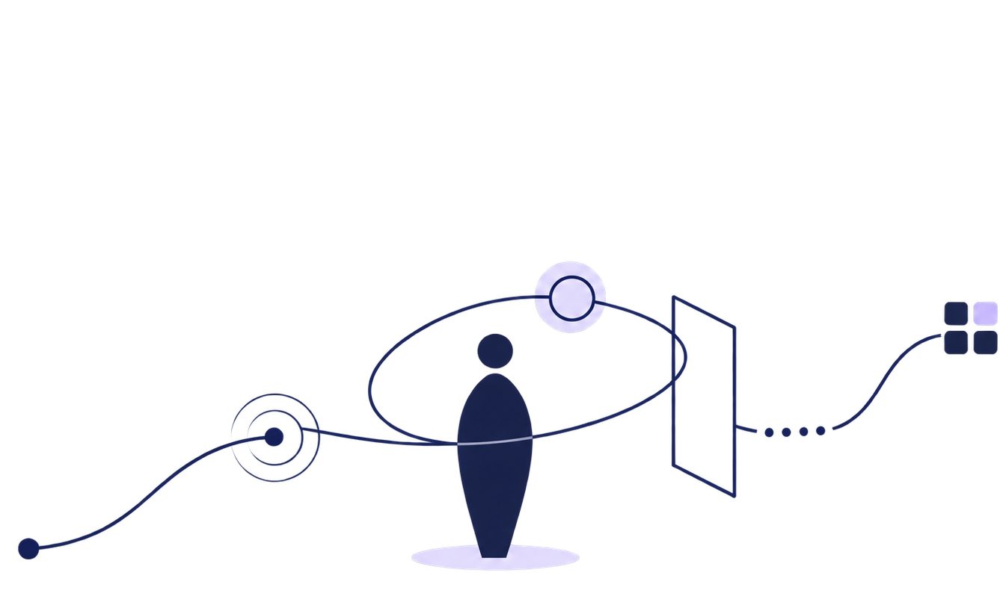
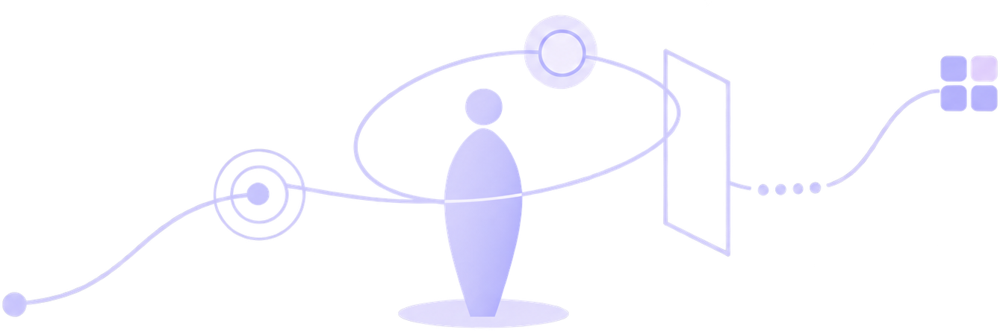

Progetto connessioni
tra persone, contenuti
e contesti.


Lavoro come Experience Designer, con esperienza in UX research, progettazione digitale, accessibilità ed eventi culturali. Traduco bisogni complessi in esperienze comprensibili e inclusive, collegando metodo, contenuti e realizzazione.
Il mio lavoro si muove tra ambienti digitali e fisici. Dal 2021 progetto e sviluppo siti e piattaforme come freelance, seguendo ogni attività dalla definizione dell'esperienza alla manutenzione. Ricerca, architettura dell'informazione, contenuti e interfacce sono per me parti di uno stesso percorso, costruito intorno alle persone che useranno ciò che progetto.
Accanto alla pratica digitale porto avanti due direzioni complementari: come co-fondatrice e vicepresidente di TracciaRoma progetto esperienze ed eventi culturali dedicati alla partecipazione e alla valorizzazione del territorio; in ambito universitario insegno e collaboro a corsi legati a data visualization, intelligenza artificiale, informatica e digital marketing. Ho inoltre lavorato nella ricerca in Human-Machine Interaction per un'installazione immersiva e multisensoriale.
Questi contesti mi hanno insegnato a passare dalla ricerca alla realizzazione senza perdere il filo: ascoltare prospettive diverse, rendere leggibili contenuti complessi, coordinare vincoli tecnici e verificare le scelte nel tempo.
Dalla comprensione alla realizzazione.
Comprendere il contesto
Raccolgo esigenze, contenuti e punti di vista, osservando con attenzione il contesto in cui il progetto prenderà forma. Cerco di capire non soltanto cosa deve essere realizzato, ma anche chi dovrà usarlo, aggiornarlo o attraversarlo nel tempo.
Dare forma al sistema
Organizzo informazioni e relazioni, poi le traduco in percorsi, interfacce, contenuti ed elementi fisici coerenti tra loro. Ogni scelta deve aiutare le persone a orientarsi, senza aggiungere complessità inutile al sistema.
Verificare e sostenere
Prototipo, testo e sviluppo, raccogliendo feedback reali quando il progetto lo consente e osservando l'uso per iterare le scelte. Considero manutenzione e autonomia parte del risultato fin dalla progettazione.
Quattro aree interconnesse.
-
Experience e UX
Ricerca, architettura dell'informazione, wireframing, prototipazione e testing per esperienze digitali, fisiche e ibride.
-
Accessibilità e Inclusive Design
Progettazione attenta all'unicità delle persone, alla leggibilità e alla possibilità di accedere a contenuti e azioni attraverso modalità differenti.
-
Contenuti e sistemi digitali
Content strategy, content design, UX/UI, sviluppo web, SEO e manutenzione di strumenti destinati a crescere nel tempo.
-
Cultura, partecipazione e formazione
Progettazione di eventi ed esperienze culturali, workshop facilitation e attività didattiche che rendono temi complessi più vicini e condivisibili.
Tra progetti, ricerca e comunità.
UX e Web Designer freelance
Progetto, sviluppo e mantengo siti web e piattaforme digitali per clienti appartenenti a settori differenti.
Co-fondatrice e vicepresidente di TracciaRoma
Progetto esperienze ed eventi culturali che connettono arte, territorio e partecipazione, dalla direzione artistica alla produzione.
Docenza, collaborazione e ricerca universitaria
Insegno e collaboro ad attività dedicate a data visualization, intelligenza artificiale, informatica, digital marketing e learning experience. Ho svolto attività di ricerca e UX design in Human-Machine Interaction per un'installazione immersiva e multisensoriale.
Un percorso di studi eterogeneo.
Laurea Magistrale in Comunicazione, Innovazione ed Experience Design
Università LUMSA · 110/110 con lode e menzione speciale. Tesi: "La prototipazione nel design inclusivo: la UX al centro di una progettazione artistica multisensoriale" — il lavoro alla base del progetto MusA.
Laurea Triennale in Lingue nella società dell'informazione
Università Tor Vergata · 110/110 con lode. Tesi: "Historygram: se i grandi della storia vivessero nell'Era social".
Vuoi scoprire di più sul mio percorso?
Nel curriculum trovi esperienze professionali, formazione, certificazioni, competenze, strumenti e lingue.